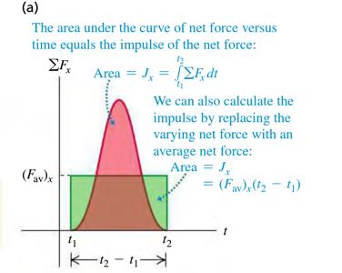

The impulse of a net force, denoted by J, is defined to be the product of the net force and the time interval.
J=∑F(t2−t1)=∑FΔt(Eq.1)
F is the constant net force.
t2−t1 is the time interval over which the net force acts.
Impulse is a vector quantity and has the same direction as the net force ∑F.
If the net force ∑F is constant, then dtdp is also constant. In that case, dtdp is equal to the total change in momentum p1−p2 during the time interval t2−t1.
The Impulse-Momentum Theorem: The impulse of the net force on a particle during a time interval equals to the change in momentum of that particle during that interval.
It also holds when forces are not constant. To see this, we integrate both sides of Newton's second law ∑F=dtdp over time between t1 and t2
We see from Eq.2 that integral on the left is the impulse of the net force:
J=∫t1t2∑Fdt
The meaning of the area under a graph of ∑Fx versus t.

Exercises
8.8 Force of a Baseball Swing. A baseball has mass 0.148kg.
(a) If the velocity of a pitched ball has a magnitude of 43.5m/s and the batted ball's velocity is 60.0m/s in the opposite direction, find the magnitude of the change in momentum of the ball and of the impulse applied to it by the bat.
Solution
P=15.3kg⋅m/s
(b) If the ball remains in contact with the bat for 2.40ms, find the magnitude of the average force applied by the bat.
Solution
F=6382.5N
8.11 At time t=0 a 2150kg rocket in outer space fires an engine that exerts an increasing force on it in the +x direction. This force obeys the equation Fx=At2, where t is time, and has a magnitude of 781.25N when t=1.25s.
a. Find the SI value of the constant A, including its units.
Solution
FxA=At2=t2Fx=1.252781.25=500N/s2
b. What impulse does the engine exert on the rocket during the 1.50s interval starting 2.00s after the engine is fired?